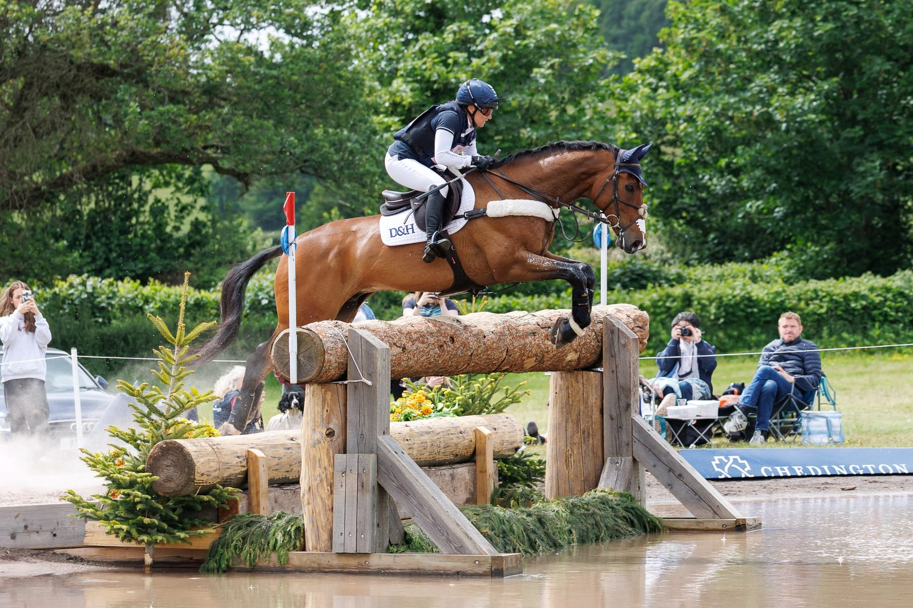

Laura Collett y London 52 buscan su cuarto triunfo consecutivo en Bicton
El binomio británico, campeón olímpico y europeo, intentará este fin de semana una hazaña histórica en el CCI4*-S de Bicton, donde ya ha ganado las tres ediciones disputadas hasta la fecha.

Foto: news.britisheventing.com
Laura Collett y London 52 se preparan para afrontar el CCI4*-S del Bicton International Horse Trials con la ambición de convertirse en los primeros en lograr cuatro victorias consecutivas en la prueba reina del concurso completo británico. El binomio, que conquistó el oro olímpico y el título europeo, ha dominado todas las ediciones celebradas desde 2023 hasta la de este año, consolidándose como la referencia absoluta del evento.
El CCI4*-S es una de las pruebas de mayor nivel técnico del concurso completo, situada en la segunda categoría de dificultad de la pirámide FEI. La prueba de este año acogerá además la etapa británica de la Copa de Naciones FEI de concurso completo, lo que ha atraído una entrada internacional de alto nivel con participación de jinetes estadounidenses, neozelandeses, japoneses e irlandeses. Entre los inscritos destaca la presencia de Tayla Mason, procedente de Nueva Zelanda, que recientemente firmó un sobresaliente sexto puesto en Badminton.
Bicton espera reunir a más de 300 caballos en su reconocido circuito de cross country diseñado por Helen West. Completan el programa competitivo el CCIY3*-L para jóvenes jinetes y el CCI2*-L, que contará con la participación de atletas de máximo nivel como el doble medallista olímpico Tom McEwen y el australiano Kevin McNab, ambos con caballos jóvenes.
— Redacción de Hípica al Día